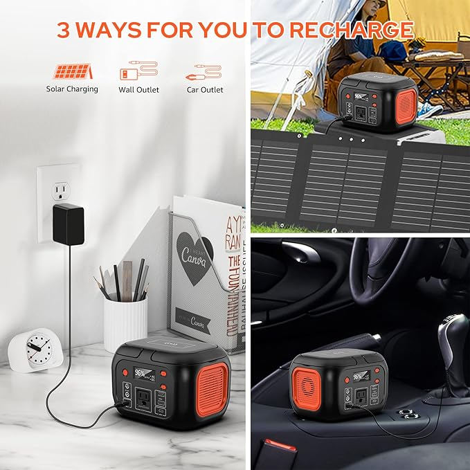
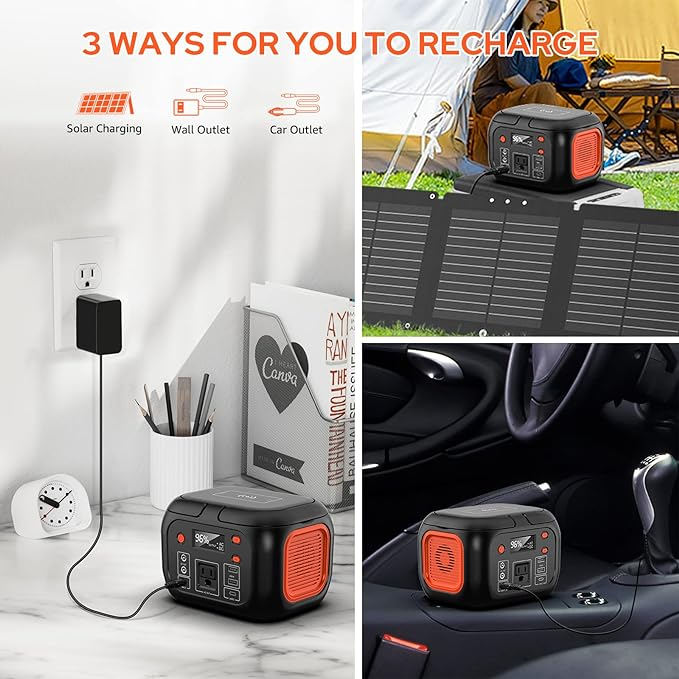
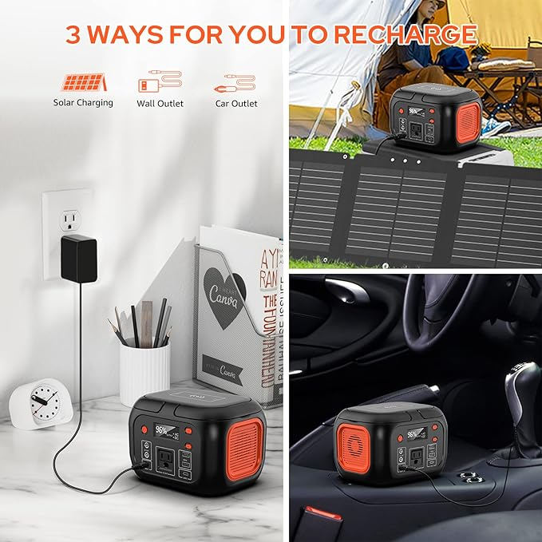

★★★★☆ 4.6 out of 5

I brought this solar generator with foldable panels on a weekend trip to a no-power cabin near the Buffalo River in the Ozarks. It was just me and my wife while our daughter stayed with my parents. No electricity, no running water, and brutal summer heat. I packed my work laptop too since I run Grit Gear HQ and needed to stay on top of things.
This unit delivered. It kept my laptop running, charged both of our phones, powered LED lights at night, and ran two clip-on fans in rotation. I ran one while charging the other, then swapped them out. That gave us constant airflow all weekend.
We stayed cool using cold wet rags from the cooler's melted ice water. I’d wrap them around my neck or soak my hair to keep my core temperature down. It wasn’t glamorous, but it worked. We slept better than expected, even with the humidity and bugs.
Since then, we’ve kept it in my wife’s car. Her AC is out until I fix the harness, so this powers clip-on fans while she drives. And when parked, the solar panel fits perfectly in the windshield like a sunshade and charges the unit in the process. That right there is genius-level convenience.
This solar generator has proven itself. Whether you're prepping, camping, road tripping, or just keeping your family safe during a power outage, this thing is essential gear. We’re already planning another cabin trip in the winter when the air is crisp and the mosquitoes are gone, but this unit will still be coming with us.
Final thought: This is the only solar generator I’ll ever need. It’s durable, reliable, and smart. Don’t wait until the next outage or heat wave hits. These sell out fast. Grab yours now while it's still in stock.
🛒 Buy the Solar Generator Now on Amazon